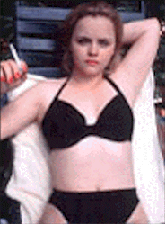
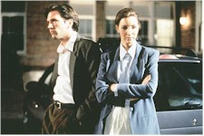

Contents | Features | Reviews | News | Archives | Store |
 |
|
| Movie Credits | Buy It! |
The Opposite of Sex
Review by Eddie Cockrell
Posted 22 May 1998
|  | Written and Directed by Don Roos Starring
Christina Ricci, Martin Donovan, |
"Things get very complicated here very quick," announces acerbic Lolita Dedee Truitt (Christina Ricci, all growed up) moments into this trenchant social satire from writer-(first time) director Don Roos, who scripted Single White Female (1992) as well as the woefully underrated Boys on the Side (1995) and 1992's Love Field (he also wrote that dreadful 1996 Sharon Stone remake of Les Diaboliques, but hey, everyone's gotta eat). One of the freshest "little" movies of the summer, The Opposite of Sex is at once shockingly funny and resolutely original, an outspoken antidote to the cardboard characters and safe stories that proliferate this time of year at the googolplexes; call this the opposite of sucks.
Dedee's not kidding about the complexity of the plot. In the rapid-fire first four minutes of the film (get to the theater on time), she runs away from her mother in Louisiana and plants herself at the Indiana house of her gay, independently wealthy half-brother Bill (Martin Donovan) and his boyfriend Matt (Ivan Sergei). She's soon seducing Matt, trading barbs with the tightly-wrapped Lucia (Lisa Kudrow) – brother of Bill's former lover, "Tom-the-dead-guy" – and setting in motion a chain of events that would be tragic if they weren't so funny. Bill is forced to resign in the face of (untrue) allegations of molesting former student Jason (Johnny Galecki), the now-pregnant Dedee persuades Matt to steal ten thousand dollars from Bill (while she swipes "Tom-the-dead-guy"'s ashes) and the ensuing chase leads to Los Angeles and beyond. Joining the crowd is Sheriff Carl Tippett (Lyle Lovett), who finds himself falling for the constantly kvetching Lucia. And what about Dedee's twangy high school boyfriend Randy (William Lee Scott)? How does he fit in?
Roos' resolutely outrageous script is a model of what might be called, for lack of a better term, postmodern screwball. Taking on virtually every topic that's been pc'd to death in contemporary society, Dedee's malicious musings include meditations on sex ("if you don't breathe in, a person can do anything for ten minutes"), marriage ("sex always ends in kids, or disease, or like, you know, relationships"), same-sex domesticity ("gays love houses"), propagation of the species ("cute, stupid people survive with lots of cute, stupid babies who also survive; it was like watching evolution at work") dead-end jobs ("you know how hard it is to get fired from Kinko's; it's like the post office, you practically have to start shooting people") AIDS ("I mean, I could drink out of the same cup or something"), and much, much more. It's almost as if Roos kept a notebook, storing up observations on things he probably think people tiptoe around instead of addressing through frankness and humor.
Perhaps the film's biggest gamble is Dedee's omniscient narration, which comes across as a blend of distaff Holden Caulfield ("If you're one of those people who don't like movies where some person you can't see talks the whole time, and covers up all the holes in the plot, and at the end says 'I was never the same after that summer,' or whatever, like it was so deep they can't stand it, then you're out of luck...") and every overcaffeinated whiner you've ever heard ("if you think I'm just plucky, and scrappy, and all I need is love, you're in over your head. I don't have a heart of gold and I don't grow one later, OK? But relax: there's other people a lot nicer coming up: we call them losers"). Yet Roos ties it all together with an elaborate storyline, Mason Daring's dryly ironic jazz score and a firm grasp of the intricate checks and balances necessary to sustain a movie in which the lead character is an unrepentant, heartless schemer. In the end just about everyone discovers that they're looking for what Dedee calls the opposite of sex: relationships that are stable and lasting (but don't expect a sentimental ending).
Ricci raw sexuality is a revelation, and she plays Dedee with frank abandon and gleeful enthusiasm. After graduating from a Manhattan high school recently, the actress will appear soon in a blizzard of movies, including Fear and Loathing in Las Vegas, Buffalo 66, John Waters' Pecker (!!!), Desert Blue and 200 Cigarettes; it's hard to see how she'll top this. Recently, she was quoted as saying "I like playing people who are so afraid and ashamed of who they are and so disgusted by everyone around them that they decide to become the ultimate extreme of what they're afraid they are," and that's as accurate a reading of Dedee as one could expect.
Donovan's deadpan reading of the nice guy/chump anchors the film in reality, while Kudrow gives an unexpectedly intense performance as the nagging Lucia (who would "hate Phoebe, the character I play on 'Friends,'"). Sergei ("John Woo's Once a Thief," Dangerous Minds) is a scream as the hapless, lunkheaded Matt, sort of the switch-hitting Ralph Bellamy of the piece, while Lovett's stiff delivery is put to good use in the context of the story. In a smaller role, Galecki (I Know What You Did Last Summer, Suicide Kings) is memorable as the vengeful, opportunistic gay guy who, uh, fingers Bill to the cops.
As everyone suffers, the omniscient Dedee ("a human tabloid," someone calls her), asserts "They've never had more fun in their lives." Neither have you; in The Opposite of Sex, things get very funny very quick – and stay that way.
Contents | Features | Reviews | News | Archives | Store
Copyright © 1999 by Nitrate Productions, Inc. All Rights Reserved.